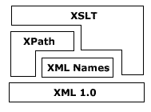

Networks
Algorithms, Models, and Data Mining Techniques
0. Mining Network Data
Part I: Foundations
1. Graph Theory: The Mathematics of Networks
2. Programs = Algorithms + Data Structures
Part II: Algorithms
3. Graph Exploration
4. Minimum Spanning Trees
5. Shortest Paths
6. Network Flow
7. Graph Isomorphism
8. Hard Problems
9. A Catalog of Graph Algorithms
Part III: Network Structure
10. Network Connectivity
11. Network Motifs
12. Network Centrality
Part IV: Network Models
13. Regular Networks
14. Poisson Random Networks
15. The Configuration Model
16. Small-World Networks
17. Scale-Free Networks
18. Hierarchical/Modular Networks
19. Affiliation Networks
??. Strategic Networks
??. Exponential Random Networks
??. Kirchhoff Networks
??. Influence Networks
??. Netgain Networks
Part IV: Data Mining Techniques
20. Visualization
21. Pattern Mining
22. Community Detection
23. Link Prediction
24. Ranking
Bibliography
TBD
Network Dynamics
Random Walks
 ©
Fernando Berzal